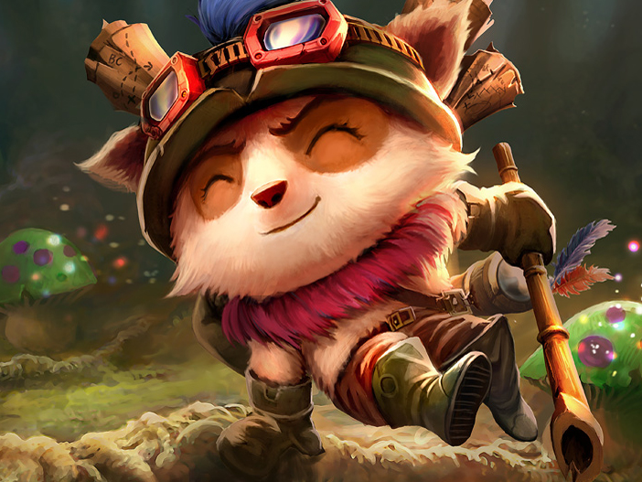

Experto en micología
Bandle, Runaterra | Explorador_Veloz@Yordles.LoL
Soy explorador de élite y líder de los Exploradores de Bandle. Experto en supervivencia extrema, navegación interdimensional y operaciones de defensa territorial. Poseo una moral inquebrantable y una capacidad única para mantener la calma bajo presión, alternando entre una personalidad jovial y una eficacia letal en combate.